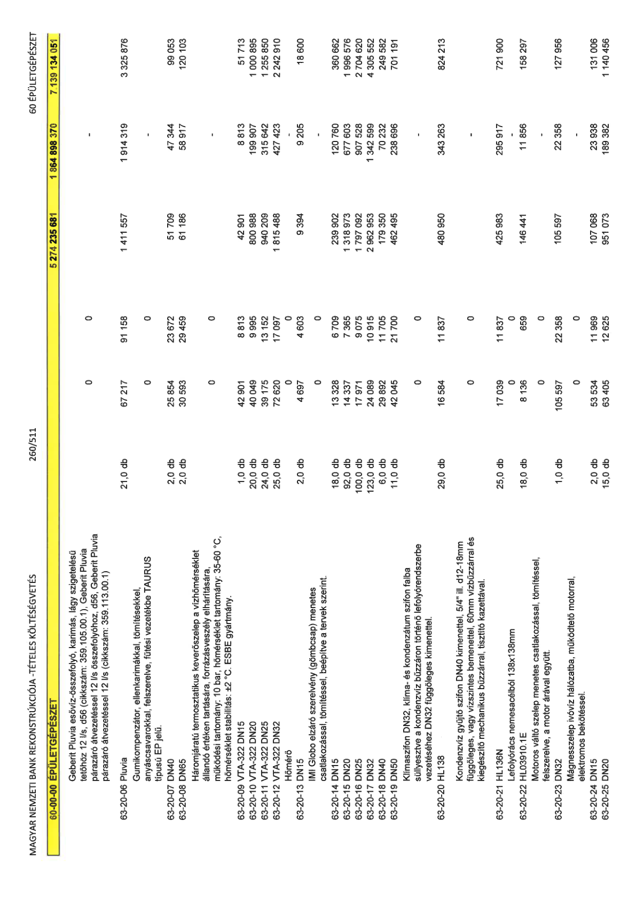

| Tétel | Menny. | Egys. | Anyag e.ár (net HUF) | Díj e.ár (net HUF) | Anyag összesen (net HUF) | Díj összesen (net HUF) | Anyag+Díj összesen (net HUF) |
|---|---|---|---|---|---|---|---|
| 60-00-00 ÉPÜLETGÉPÉSZET | NaN | NaN | 0 | 0 | 5 274 235 681 | 1 864 898 370 | 7 139 134 051 |
| Geberit Pluvia esővíz-összefolyó, karimás, lágy szigetelésű tetőhöz 12 l/s, d56 (cikkszám: 359.105.00.1), Geberit Pluvia párazáró átvezetéssel 12 l/s összefolyóhoz, d56, Geberit Pluvia párazáró átvezetéssel 12 l/s (cikkszám: 359.113.00.1) | 0 | 0 | 0 | 0 | 0 | 0 | 0 |
| 63-20-06 Pluvia | 21,0 | db | 67 217 | 91 158 | 1 411 557 | 1 914 319 | 3 325 876 |
| Gumikompenzátor, ellenkarimákkal, tömítésekkel, anyáscsavarokkal, felszerelve, fűtési vezetékbe TAURUS típusú EP jelű. | 0 | 0 | 0 | 0 | 0 | 0 | 0 |
| 63-20-07 DN40 | 2,0 | db | 25 854 | 23 672 | 51 709 | 47 344 | 99 053 |
| 63-20-08 DN65 | 2,0 | db | 30 593 | 29 459 | 61 186 | 58 917 | 120 103 |
| Háromjáratú termosztatikus keverőszelep a vízhőmérséklet állandó értéken tartására, forrázásveszély elhárítására, működési tartomány: 10 bar, hőmérséklet tartomány: 35-60 °C, hőmérséklet stabilitás: ±2 °C. ESBE gyártmány. | 0 | 0 | 0 | 0 | 0 | 0 | 0 |
| 63-20-09 VTA-322 DN15 | 1,0 | db | 42 901 | 8 813 | 42 901 | 8 813 | 51 713 |
| 63-20-10 VTA-322 DN20 | 20,0 | db | 40 049 | 9 995 | 800 988 | 199 907 | 1 000 895 |
| 63-20-11 VTA-322 DN25 | 24,0 | db | 39 175 | 13 152 | 940 209 | 315 642 | 1 255 850 |
| 63-20-12 VTA-322 DN32 | 25,0 | db | 72 620 | 17 097 | 1 815 488 | 427 423 | 2 242 910 |
| Hőmérő | 0 | 0 | 0 | 0 | 0 | 0 | 0 |
| 63-20-13 DN15 | 2,0 | db | 4 697 | 4 603 | 9 394 | 9 205 | 18 600 |
| IMI Globo elzáró szerelvény (gömbcsap) menetes csatlakozással, tömítéssel, beépítve a tervek szerint. | 0 | 0 | 0 | 0 | 0 | 0 | 0 |
| 63-20-14 DN15 | 18,0 | db | 13 328 | 6 709 | 239 902 | 120 760 | 360 662 |
| 63-20-15 DN20 | 92,0 | db | 14 337 | 7 365 | 1 318 973 | 677 603 | 1 996 576 |
| 63-20-16 DN25 | 100,0 | db | 17 971 | 9 075 | 1 797 092 | 907 528 | 2 704 620 |
| 63-20-17 DN32 | 123,0 | db | 24 089 | 10 915 | 2 962 953 | 1 342 599 | 4 305 552 |
| 63-20-18 DN40 | 6,0 | db | 29 892 | 11 705 | 179 350 | 70 232 | 249 582 |
| 63-20-19 DN50 | 11,0 | db | 42 045 | 21 700 | 462 495 | 238 696 | 701 191 |
| Klímaszifon DN32, klíma- és kondenzátum szifon falba süllyesztve a kondenzvíz bűzzáron történő lefolyórendszerbe vezetéséhez DN32 függőleges kimenettel. | 0 | 0 | 0 | 0 | 0 | 0 | 0 |
| 63-20-20 HL138 | 29,0 | db | 16 584 | 11 837 | 480 950 | 343 263 | 824 213 |
| Kondenzvíz gyűjtő szifon DN40 kimenettel, 5/4” ill. d12-18mm függőleges, vagy vízszintes bemenettel, 60mm vízbűzzárral és kiegészítő mechanikus bűzzárral, tisztító kazettával. | 0 | 0 | 0 | 0 | 0 | 0 | 0 |
| 63-20-21 HL136N | 25,0 | db | 17 039 | 11 837 | 425 983 | 295 917 | 721 900 |
| Lefolyórács nemesacélból 138x138mm | 0 | 0 | 0 | 0 | 0 | 0 | 0 |
| 63-20-22 HL03910.1E | 18,0 | db | 8 136 | 659 | 146 441 | 11 856 | 158 297 |
| Motoros váltó szelep menetes csatlakozással, tömítéssel, felszerelve, a motor árával együtt. | 0 | 0 | 0 | 0 | 0 | 0 | 0 |
| 63-20-23 DN32 | 1,0 | db | 105 597 | 22 358 | 105 597 | 22 358 | 127 956 |
| Mágnesszelep ivóvíz hálózatba, működtető motorral, elektromos bekötéssel. | 0 | 0 | 0 | 0 | 0 | 0 | 0 |
| 63-20-24 DN15 | 2,0 | db | 53 534 | 11 969 | 107 068 | 23 938 | 131 006 |
| 63-20-25 DN20 | 15,0 | db | 63 405 | 12 625 | 951 073 | 189 382 | 1 140 456 |
